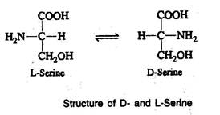
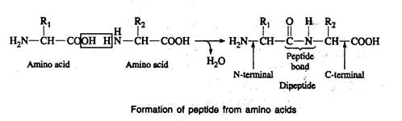
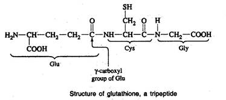

BIC 101 :: Lecture 11 :: AMINO ACIDS AND PROTEINS

The word "Protein" was coined by J.J. Berzelius in 1838 and was derived from the Greek word "Proteios" meaning the ‘first rank’.
- Proteins are macromolecular polymers composed of amino acids as the basic unit linked by peptide bonds.
- Amino acids are the fundamental structural units of all proteins.
- These biopolymers contain carbon, hydrogen, oxygen, nitrogen and sulphur.
- The elementary composition of most proteins is very similar; approximate percentages are C=50-55, H=6-8, O=20-23, N=15-18 and S=Traces
Occurrence
- Proteins are found in all living cells.
- They form essential constituent of protoplasm, cell membrane and nuclear material.
- They may be present as simple proteins or complexes with lipids or nucleic acids.
- Proteins from different tissues such as muscle, bone, brain, blood and other biological fluids differ in composition and properties.
- In cereal and leguminous plants, seeds contain comparatively higher amounts of protein than stem, leaves and flowers.
- Tuber crops usually contain less amounts of protein in all parts.
- Enzymes are specialized proteins with catalytic activities and are present in all living organisms.
- Proteins serve as regulators of metabolic reactions, directly as components of enzymes and indirectly in the form of chemical messengers known as hormones as well as receptors for hormones.
- They regulate and integrate the numerous physiological and metabolic processes in the body.
- Proteins are the center of action in many biological processes.
Amino acids
All proteins are formed from 20 different amino acids. All the amino acids have trivial or common names based on the source from which they were first isolated or based on their properties. For eg.
Asparagine was named so, as it was isolated from asparagus and glycine was so named because of its sweet taste (Greek:'glykos' meaning sweet).
All the 20 amino acids, except proline, found in proteins have an amino group and a carboxyl group attached to the same carbon atom, namely the -carbon. They differ only in the side chains (R groups). The 20 amino acids found in proteins are referred as the standard or normal or protein amino acids.
There are many other amino acids found in nature but do not occur in proteins. They are referred as non-protein amino acids.
Classification of protein amino acids
The protein amino acids are classified according to the chemical nature of their R groups as aliphatic, aromatic, heterocyclic and sulphur containing amino acids. More meaningful classification of amino acids is based on the polarity of the R groups. The polarity of the R groups varies widely from totally non-polar to highly polar. The 20 amino acids are classified into four main classes whose structures, three-letter and one-letter symbols are given below
a) Amino acids with non-polar or hydrophobic, aliphatic R groups
- This group of amino acids includes glycine, alanine, valine, leucine, isoleucine and proline. The hydrocarbon R groups are non-polar and hydrophobic.
- The side chains of alanine, valine, leucine and isoleucine are important in promoting hydrophobic interactions within protein structures.
- The minimal steric hindrance of the glycine side chain (hydrogen) allows more flexibility than other amino acids.
- On the other hand, the imino group of proline is held in a rigid conformation and reduces the structural flexibility of the protein.
b) Amino acids with non-polar aromatic R groups
- This group includes phenylalanine, tyrosine and tryptophan .
- All these amino acids participate in hydrophobic interactions, which is stronger than aliphatic R groups because of stacking one another.
- Tyrosine and tryptophan are more polar than phenylalanine due to the presence of hydroxyl group in tyrosine and nitrogen in the indole ring of tryptophan.
- The absorption of ultraviolet (UV) light at 280 nm by tyrosine, tryptophan and to a lesser extent by phenylalanine is responsible for the characteristic strong absorbance of light by proteins. This property is exploited in the characterization and quantification of proteins.
c) Amino acids with polar, uncharged R groups
- This group of amino acids includes serine, threonine, cysteine, methionine, asparagine and glutamine .
- The hydroxyl group of serine and threonine, the sulphur atom of cysteine and methionine and the amide group of asparagine and glutamine, contribute to the polarity.
- The R groups of these amino acids are more hydrophilic than the non-polar amino acids.
d) Amino acids with charged R groups
- Acidic: The two amino acids with acidic R groups are aspartic and glutamic acids. These amino acids have a net negative charge at pH 7.0.
- Basic: This group includes lysine, arginine and histidine . The R groups have a net positive charge at pH 7.0. The lysine has a second -amino group; arginine has a positively charged guanidino group; and histidine has an imidazole group.
Properties of amino acids
Physical
- Amino acids are white crystalline substances.
- Most of them are soluble in water and insoluble in non-polar organic solvents (e.g., chloroform and ether).
- Aliphatic and aromatic amino acids particularly those having several carbon atoms have limited solubility in water but readily soluble in polar organic solvents.
- They have high melting points varying from 200-300oC or even more.
- They are tasteless, sweet or bitter.
- Some are having good flavour. Sodium glutamate is a valuable flavouring agent and is used in the preparation of certain dishes and sauces.
Amphoteric nature of amino acids
- Amino acids are amphoteric compounds, as they contain both acidic (COOH) and basic (NH2) groups.
- They can react with both alkalies and acids to form salts.
- In acid solution amino acids carry positive charges and hence they move towards cathode in an electric field.
- In alkaline solution, the amino acids carry negative charges and therefore move towards anode.
- When an amino acid is dissolved in water, it exists as inner salt carrying both positive and negative charges.This occurs as a result of dissociation of carboxyl group to release the H+ ion, which passes from the carboxyl to the amino group. The amino acids possessing both positive and negative charges are called zwitterions.
- The zwitterion reacts as an acid with a base by liberating a proton (H+) from the NH3+ group and as a result possesses a net negative charge.
- On the other hand, zwitterions reacts with an acid as base, combining with the proton (H+) of the acid resulting in the formation of a compound having a net positive charge. These reactions are reversible.
- The pH at which the amino acid has no tendency to move either towards positive or negative electrode is called isoelectric pH or isoelectric point.
- At isoelectric pH, the amino acid molecule bears a net charge of zero.
Isomerism
- All amino acids except proline, found in protein are -amino acids because NH2 group is attached to the -carbon atom, which is next to the COOH group.
- Examination of the structure of amino acids reveals that except glycine, all other amino acids possess asymmetric carbon atom at the alpha position.
- Because of the presence of asymmetric carbon atom, amino acids exist in optically active forms.
- For example, in the steric configuration for serine, the carboxyl group is written on the top, while the amino group is written to the left in the case of L-serine and to the right in the case of D-serine This distinction will hold good for all the amino acids having asymmetric carbon atoms.

- 'D' and 'L' do not refer to the optical rotation, but to the steric configuration of amino group to the right and left side of the carboxyl group.
- The direction of optical rotation of amino acid is indicated by the symbol + or -, which follows the designation 'D' or 'L'.
- The steric configuration and optical rotation of an amino acid may be simultaneously expressed as D (+) or D (-) and L (+) or L (-).
- L-forms are more common than D-forms and most of the naturally occurring amino acids are L-amino acids.
Chemical properties
a) Reactions due to amino group
Reaction with formaldehyde (Formal titration)
- Amino acid exists as zwitterion in aqueous medium. If an amino acid solution is treated with excess of neutralized formaldehyde solution, the amino group combines with formaldehyde forming dimethylol amino acid which is an amino acid formaldehyde complex.
- Hence the amino group is protected and the proton released is titrated against alkali.
- This method is used to find out the amount of total free amino acids in plant samples.
Reaction with nitrous acid
Nitrous acid reacts with the amino group of amino acids to form the corresponding hydroxyacids and liberate nitrogen gas.
Reaction with ninhydrin
- Ninhydrin is a strong oxidizing agent.
- When a solution of amino acid is boiled with ninhydrin, the amino acid is oxidatively deaminated to produce ammonia and a ketoacid.
- The keto acid is decarboxylated to produce an aldehyde with one carbon atom less than the parent amino acid.
- The net reaction is that ninhydrin oxidatively deaminates and decarboxylates -amino acids to CO2, NH3 and an aldehyde.
- The reduced ninhydrin then reacts with the liberated ammonia and another molecule of intact ninhydrin to produce a purple coloured compound known as Ruhemann's purple.
- This ninhydrin reaction is employed in the quantitative determination of amino acids.
- Proteins and peptides that have free amino group(s) (in the side chain) will also react and give colour with ninhydrin.
b) Reactions due to carboxyl group
Decarboxylation
- The carboxyl group of amino acids is decarboxylated to yield the corresponding amines. Thus, the vasoconstrictor agent, histamine is produced from histidine.
- Histamine stimulates the flow of gastric juice into the stomach and the dilation and constriction of specific blood vessels.
- Excess reaction to histamine causes the symptoms of asthma and various allergic reactions.
Essential amino acids
- Most of the prokaryotic and many eukaryotic organisms (plants) are capable of synthesizing all the amino acids present in the protein. But higher animals including man possess this ability only for certain amino acids.
- The amino acids, which are needed for normal functioning of the body but cannot be synthesized from metabolic intermediates, are called essential amino acids.
- These must be obtained from the diet and a deficiency in any one of the amino acids prevents growth and may even cause death.
- Methionine, Arginine, Threonine, Tryptophan, Valine, Isoleucine, Leucine, Phenylalanine, Histidine, and Lysine are the essential amino acids (Remember MATTVILPHLy).
Peptide
- Amino acids are linked together by formation of covalent bonds.
- The covalent bond is formed between the -carboxyl group of one amino acid and the -amino group of the next amino acid.
- The bond so formed between the carboxyl and the amino groups, after elimination of a water molecule is called as a peptide bond and the compound formed is a peptide.
- The peptide formed between two amino acids is a dipeptide; three amino acids is a tripeptide; few amino acids are an oligopeptide and many amino acids is a polypeptide.
- In writing the peptide structure, the amino terminal (N-terminal) amino acid is written first and carboxyl terminal (C-terminal) amino acid written last.

Peptides of physiological interest
- Glutathione is a commonly occurring tripeptide (-glutamyl cysteinyl glycine) in many living organisms.

- It has a role in detoxification of toxic compounds in physiological system.
- The nanapeptides (nine amino acids), oxytocin and vasopressin are important animal peptide hormones.
- Oxytocin induces labor in pregnant women and controls contraction of uterine muscle.
- Vasopressin plays a role in control of blood pressure by regulating the contraction of smooth muscles.
- A dipeptide L-aspartyl-L-phenylalanine, is of commercial importance. This dipeptide is about 200 times sweeter than cane sugar. The methyl ester of this dipeptide is called as aspartame and marketed as an artificial sweetener for diabetics.
| Download this lecture as PDF here |